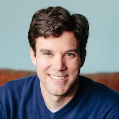

!!! jhelmus
<div id="contentwide">
	<h2>About Jonathan J. Helmus</h2>

	

    <p>
    I am a software engineer on the Python team at
    <a href="https://twitter.com/">Twitter</a>.
    </p>

    <p>
    Prior to joining Twitter, I worked at
    <a href="https://www.anaconda.com/">Anaconda, Inc</a>,
    as a member of the team which produced the
    <a href="https://www.anaconda.com/distribution/">Anaconda Distribution</a>,
    a popular python data science platform.  I helped create
    <a href="https://conda.io">conda</a>
    packages for the distribution and specialize in building
    AI/deep learning software, including Tensorflow, Caffe and PyTorch.
    </p>

    <p>
    In the past I was a frequent contributor to a number of open source packages in
    the PyData/Scientific Python ecosystem.  This included being a core member
    of <a href="https://conda-forge.github.io/">conda-forge</a>,
    the creator and maintainer of
    <a href="https://github.com/jjhelmus/berryconda">berryconda</a>,
    as well as the author of
    <a href="https://github.com/jjhelmus/pyfive">pyfive</a> and
    <a href="http://www.nmrglue.com/">nmrglue</a>.
    I have since reduced my open source involvement to persue other interests.
    </p>

    <p>
    Before Anaconda, I was a scientist and software engineer at
    <a href="http://www.anl.gov">Argonne National Laboratory</a>
    where I conducted research and developed software for the
    <a href="http://www.arm.gov">Atmospheric Radiation Measurement (ARM) Climate Research Facility</a>.
    At that time I was the lead developer of the
    <a href="https://github.com/ARM-DOE/pyart/">Python ARM Radar Toolkit (Py-ART)</a>,
    an open source toolkit for the analysis and manipulation of weather radar data.
    </p>

    <p>
    </p>

    <p>
    I received my Ph.D. at the
    <a href="http://www.osu.edu">Ohio State University</a> in the
    Chemical Physics department. My research was focused on using solid state
    NMR to study biological solids under the guidance of Christopher Jaroniec.
    </p>

    <p>
    After Ohio State, I conducted postdoctoral research with Jeffrey Hoch at the
    <a href="http://www.uchc.edu">University of Connecticut Heath Center </a>
    developing advanced methods for processing NMR data.
    </p>

	<h2>Contact Information</h2>
	<p><b>Email:</b> <a href="mailto:jjhelmus@gmail.com">jjhelmus@gmail.com</a></p>
	<p><b>Code Samples: </b> <a href="http://github.com/jjhelmus">github.com/jjhelmus</a></p>
    <p><b>Presentations: </b> <a href="https://github.com/jjhelmus/presentations">github.com/jjhelmus/presentations</a></p>

</div>
